Guia da Relíquia Lendária de Dorian para Hero Wars Alliance
- Por: Alexandre Domingos. .
Dorian sempre viveu nas sombras de carries mais fortes — um suporte leal que curava em silêncio e não pedia nada em troca. Mas o rework mudou tudo. Ele não apenas cura: ele se sacrifica para tornar seus aliados quase impossíveis de matar, ressuscita companheiros caídos pela pura força da vontade vampírica e transforma o próprio conceito de morte em uma ferramenta tática. Se você já subestimou este Mago de Sangue, agora é a hora de olhar de novo.
Este guia completo do Dorian cobre tudo o que você precisa depois do rework — habilidades com fórmulas, comparação de talismãs, prioridades de skins e glifos, ordem de artefatos, counters, sinergias e sugestões de times para Hydra. Seja você iniciante ou veterano ajustando sua lineup, este guia vai mostrar exatamente até onde Dorian pode chegar quando é construído da forma correta.
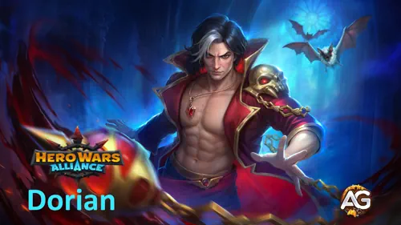

📋 Guia do Dorian — Índice
Quem é Dorian em Hero Wars Alliance?
Dorian é um Curandeiro Mago de Sangue da facção Caminho do Caos. Depois do rework, ele se tornou um dos suportes mais únicos do jogo: em vez de simplesmente restaurar HP, ele sacrifica a própria vida para aumentar permanentemente a Vida Máxima dos aliados, ressuscita companheiros mortos e fortalece o Vampirismo de toda a equipe — até mesmo depois da morte.

- Classe Principal: Curandeiro
- Posição: Linha de Trás
- Atributo Principal: Inteligência
- Facção: Caminho do Caos
- Como conseguir Pedras da Alma: Campanha & vários eventos
- Sinergia: Fafnir, Artemis, Tristan, Galahad, Martha, Lilith, Faceless, Xe'sha
O papel dele não é apenas curar — é remodelar o campo de batalha tornando cada aliado mais difícil de matar e depois se recusando a deixá-los mortos. Ele é um herói de Inteligência, o que significa que Ataque Mágico é seu principal multiplicador de dano e cura.
Nota do rework (Nexters): "Dorian fica muito mais forte como Herói no geral e, especialmente, como Curandeiro! Ele sacrifica a própria vida para curar aliados e aumentar a vida máxima deles. Ele está pronto para fazer qualquer coisa em nome da vitória em comum!"
Prós & Contras do Dorian — Hero Wars Alliance
✅ Prós
- Aumenta permanentemente a Vida Máxima dos aliados — escala com cada ponto da própria Vida.
- A aura de Vampirismo continua ativa mesmo depois que Dorian morre.
- A relíquia lendária concede imunidade a atordoamento e sono para toda a equipe.
- A Habilidade 6 (Chamado de Sangue) pode ressuscitar um aliado morto — uma mecânica que muda o jogo em lutas longas.
- Excelente para Hydra — especialmente nos times da Hydra de Fogo, Luz e Trevas.
❌ Contras
- Depende muito de o time aliado ter heróis com Vampirismo para liberar todo o potencial do kit.
- Sacrifica o próprio HP — pode se autodestruir em times fracos e sem suporte.
- A ressurreição (Habilidade 6) tem condições rígidas: os aliados precisam curar através de Vampirismo durante a janela de Quase Morte.
- As Pedras da Alma não são fáceis de farmar no início do jogo.
Dorian — Comparação dos Status Máximos dos Talismãs
| Status |
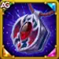 Talismã de Sangue |
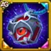 Talismã da Sede |
|---|---|---|
| Inteligência |  17,378 17,378 |
15,378 |
| Vida |  968,232 968,232 |
1,149,732 ⭐ |
| Ataque Físico |  36,706 36,706 |
34,706 |
| Ataque Mágico |  175,312 ⭐ 175,312 ⭐ |
169,312 |
| Armadura |  37,998 37,998 |
51,798 ⭐ |
| Defesa Mágica |  55,958 55,958 |
53,958 |
| Tenacidade |  2,571 2,571 |
2,571 |
| Penetração Mágica |  19,800 ⭐ 19,800 ⭐ |
— |
⭐ = status em que este talismã leva vantagem. Recomendado: Talismã de Sangue — maior Ataque Mágico e Penetração Mágica escalam diretamente todas as fórmulas de cura.
Guia de Talismãs do Dorian — Hero Wars Alliance
Dorian tem dois talismãs: Talismã de Sangue e Talismã da Sede. Diferente das skins — nas quais você mantém todos os bônus independentemente da que estiver usando — apenas o talismã equipado concede seus status. Escolher o talismã certo pode fazer uma diferença significativa na batalha. Os três Slots de Reroll contam como um único bônus combinado, então o que importa é o total dos três slots somados.
Talismã de Sangue
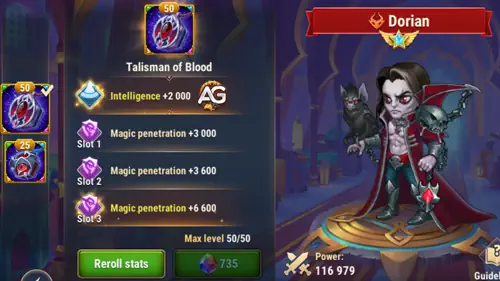
O slot principal do Talismã de Sangue concede Inteligência +2.000, que é o atributo principal do Dorian. Como Inteligência é seu atributo principal, cada ponto concede: 3 de Ataque Mágico, 1 de Defesa Mágica e 1 de Ataque Físico. Isso significa que este talismã entrega +6.000 de Ataque Mágico, +2.000 de Defesa Mágica e +2.000 de Ataque Físico apenas pelo atributo principal. Os três slots de reroll são dedicados a Penetração Mágica, totalizando +19.800 de Penetração Mágica combinados. Isso reduz diretamente a resistência mágica inimiga — fazendo Asas da Noite causar mais dano, o que significa mais cura devolvida aos aliados.
|
Talismã de Sangue |
Total do Atributo Principal |
|---|---|
|
Inteligência |
+2,000 (+6.000 Atq. Mág. / +2.000 Def. Mág. / +2.000 Atq. Fís.) |
| Slot 1 | Slot 2 | Slot 3 | Bônus Total de Reroll |
|---|---|---|---|
|
Penetração Mágica +6,600 |
Penetração Mágica +6,600 |
Penetração Mágica +6,600 |
Penetração Mágica +19,800 |
Talismã da Sede
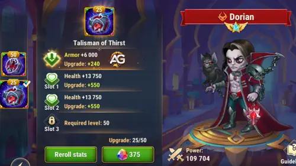
O slot principal do Talismã da Sede concede Armadura +12.000, que é um status puramente defensivo. Os três slots de reroll são dedicados a Vida, totalizando +181.500 de Vida combinados. Esse enorme pool de Vida aumenta a sobrevivência e, mais importante, escala o Amuleto dos Ancestrais: a fórmula (20% de Vida + 6.000) significa que cada 1.000 de Vida extra adiciona +200 de Vida Máxima por conjuração ao aliado com menor Vida. Com +181.500 de Vida vindos dos rerolls, o Amuleto dos Ancestrais entrega +36.300 de Vida Máxima extras por conjuração.
|
Talismã da Sede |
Total do Atributo Principal |
|---|---|
|
Armadura |
+12,000 |
| Slot 1 | Slot 2 | Slot 3 | Bônus Total de Reroll |
|---|---|---|---|
|
Vida +60,500 |
Vida +60,500 |
Vida +60,500 |
Vida +181,500 |
Dicas do Alexandre: Use o Talismã de Sangue como escolha padrão. A Penetração Mágica dos slots de reroll faz Asas da Noite causar mais dano, o que amplifica diretamente a cura devolvida a todos os aliados — um efeito multiplicador que você não consegue com o bônus de Armadura do Talismã da Sede. Troque para o Talismã da Sede somente se seu time já estiver morrendo para burst físico e precisar de HP bruto para sobreviver tempo suficiente para o Amuleto dos Ancestrais acumular — por exemplo, contra composições físicas agressivas em Guerras de Guilda.
Prioridade de Upgrade das Habilidades da Relíquia Lendária de Dorian — Hero Wars Alliance
O rework do Dorian introduziu duas melhorias lendárias e duas habilidades totalmente novas. Aqui está exatamente como cada uma funciona, o que as fórmulas significam na prática e em qual ordem evoluí-las para extrair o máximo de cada Relíquia investida.
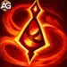
1ª — Fonte de Sangue
Descrição no jogo: Aplica o efeito Fonte de Sangue ao inimigo mais próximo por 7,0 segundos. Os ataques dos aliados contra esse inimigo restauram a Vida deles. Se o alvo morrer antes do fim do efeito, ele é transferido para o inimigo mais próximo por 7,0 segundos. Enquanto estiver ativo, o efeito não pode ser reaplicado ao mesmo alvo.
Explicação da habilidade: Dorian marca um inimigo com uma aura vampírica. Toda vez que um aliado acerta esse alvo marcado, ele rouba vida de volta — calculado como (30% de Ataque Mágico + 12.000) de cura por acerto. Se o inimigo marcado morrer, o efeito salta automaticamente para o próximo alvo, mantendo a corrente de cura viva durante toda a luta. Pense nisso como uma sanguessuga viva que se recusa a parar até que seu time esteja totalmente curado.
Fórmula com o Talismã de Sangue
- Cura por acerto: Cura: ~64,594 (30% × 175,312 + 12,000)
Fórmula com o Talismã da Sede
- Cura por acerto: Cura: ~62,794 (30% × 169,312 + 12,000)
Informações da animação da habilidade
- Duração: 7,0 segundos
- Palavras-chave: Pode evoluir para Lendária
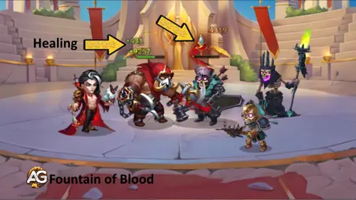
Prioridade de evolução: Muito Alta — Este é o principal motor de cura do Dorian. Evoluí-la aumenta a base de 12.000, enquanto a melhoria Lendária estende a duração e muda a fórmula de cura. Sempre priorize primeiro.
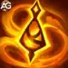
1ª — Fonte de Sangue (Habilidade Aprimorada) Relíquia Lendária: Nível 10
Descrição no jogo: O efeito agora dura 10 segundos (antes 7). Os aliados restauram mais HP ao atacar inimigos afetados — a fórmula de cura muda para 10% da Vida Máxima do inimigo, limitada a (20% da Vida do Dorian).
Explicação da habilidade: No nível Lendário, Fonte de Sangue vira um roubo de vida baseado em porcentagem em vez de uma fórmula fixa. Cada golpe agora drena 10% da Vida Máxima do inimigo, mas é limitado a (20% da própria Vida do Dorian) por golpe. Isso significa que a skin Romântica e o glifo de Vida aumentam diretamente quanto cada aliado se cura por ataque — um ciclo de feedback muito poderoso. Com os status do Talismã de Sangue (~968.232 de Vida), o limite por golpe fica em aproximadamente ~193,646. Contra inimigos mais tanques, isso pode superar facilmente a cura da habilidade base.
Fórmula com o Talismã de Sangue
- Limite de cura por acerto: Limite: ~193,646 (20% × 968,232 de Vida)
Fórmula com o Talismã da Sede
- Limite de cura por acerto: Limite: ~229,946 (20% × 1,149,732 de Vida)
- Duração: 10,0 segundos
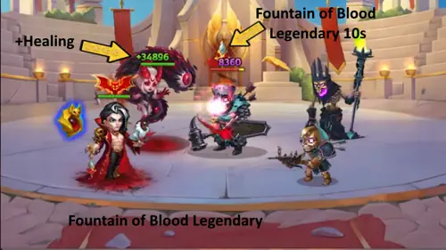
Prioridade de evolução: Muito Alta — A fórmula baseada em porcentagem é dramaticamente mais forte contra inimigos com muito HP, como chefes da Hydra. Esta relíquia transforma Dorian de um curandeiro mediano em um suporte de topo. Desbloqueie assim que a habilidade base estiver no máximo.
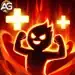
2ª — Amuleto dos Ancestrais
Descrição no jogo: Dorian sacrifica uma parte da Vida atual para aumentar a Vida Máxima do aliado com menor Vida até o fim da batalha. Esta habilidade afeta apenas os aliados que iniciaram a batalha com ele.
Explicação da habilidade: Esta é a habilidade de identidade do Dorian após o rework. Ele drena (20% da Vida atual dele) de si mesmo e adiciona (20% de Vida + 6.000) permanentemente à Vida Máxima do aliado mais vulnerável. A mecânica-chave é: quanto mais Vida Dorian tiver, mais Vida Máxima ele concede. Com a skin Romântica, o glifo de Vida e o Talismã da Sede, esse uso pode conceder mais de +200.000 de Vida Máxima a um aliado em uma luta longa. É por isso que a skin Romântica e os itens que escalam com Vida têm prioridade "Muito Alta".
Fórmula com o Talismã de Sangue
- Vida Máxima concedida por uso: Vida Máxima: ~199,646 (20% × 968,232 + 6,000)
- Vida sacrificada por uso: ~193,646 (20% da Vida atual)
Fórmula com o Talismã da Sede
- Vida Máxima concedida por uso: Vida Máxima: ~235,946 (20% × 1,149,732 + 6,000)
- Palavras-chave: Sacrifício
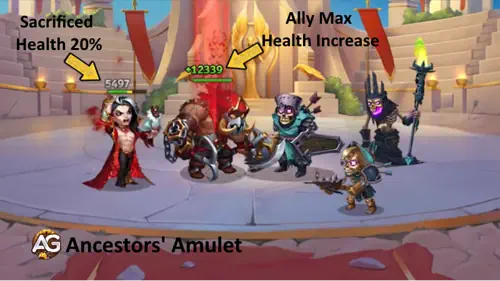
Prioridade de evolução: Alta — Evoluir aumenta a base de 6.000 da fórmula de Vida Máxima. A parte percentual escala automaticamente com os itens e skins de Vida do Dorian, então esta habilidade se beneficia tanto de upgrades diretos quanto de investimento na skin Romântica e no glifo de Vida.
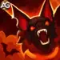
3ª — Asas da Noite
Descrição no jogo: Ataca os inimigos e cura os aliados em 100% do dano causado.
Explicação da habilidade: Dorian libera um golpe mágico que causa (50% de Ataque Mágico + 9.000) de dano mágico aos inimigos — e simultaneamente cura todos os aliados na mesma quantidade. Esta é sua ferramenta de cura explosiva: um único uso pode encher a vida do time inteiro com uma cura global. Como existe conversão de 100% do dano em cura, a Penetração Mágica do Talismã de Sangue também aumenta indiretamente o quanto é curado ao reduzir a defesa mágica inimiga e maximizar o dano causado.
Fórmula com o Talismã de Sangue
- Dano & Cura: Dano Mágico / Cura: ~96,656 (50% × 175,312 + 9,000)
Fórmula com o Talismã da Sede
- Dano & Cura: Dano Mágico / Cura: ~93,656 (50% × 169,312 + 9,000)
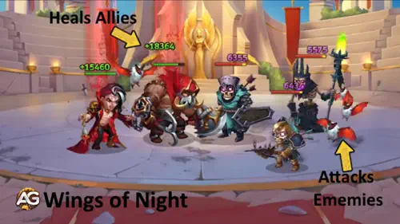
Prioridade de evolução: Alta — Evoluir aumenta a base de 9.000, aumentando diretamente tanto o dano quanto a cura em área por uso. É a segunda habilidade em que você deve investir depois de maximizar Fonte de Sangue.
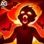
4ª — Selo de Sangue (Passiva)
Descrição no jogo: Aumenta o Vampirismo dos aliados próximos. Esta habilidade afeta apenas os Heróis que iniciaram a batalha com Dorian e permanece ativa após a morte dele. A chance de aumentar o Vampirismo é menor se o nível dos aliados for maior que 120.
Explicação da habilidade: Esta é a aura do Dorian — um amplificador passivo de vampirismo que aumenta o roubo de vida de todos os aliados próximos em 105%. A mecânica mais importante aqui é que ela persiste mesmo depois que Dorian morre. Então, mesmo quando o inimigo o elimina, seu time continua roubando vida a cada golpe. É por isso que Dorian é tão eficaz em times de Hydra — a aura sustenta a luta inteira.
- Aumento de Vampirismo: +105%
- Palavras-chave: Pode evoluir para Lendária, persiste após a morte
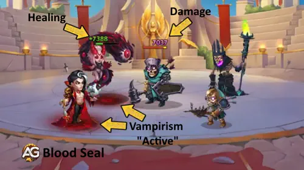
Prioridade de evolução: Média Alta — Evoluir Selo de Sangue aumenta a porcentagem de bônus de vampirismo, que se acumula em toda a equipe. Não escala diretamente com os status do Dorian, mas mais vampirismo significa que cada aliado cura mais em cada ataque durante toda a batalha — inclusive depois que ele morre.
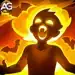
4ª — Selo de Sangue (Habilidade Aprimorada) Relíquia Lendária: Nível 20
Descrição no jogo: Depois de serem curados por Vampirismo ou Fonte de Sangue, os aliados de Dorian se tornam imunes a atordoamento e sono por 3,0 segundos.
Explicação da habilidade: Esta melhoria Lendária adiciona uma camada reativa de imunidade a CC por cima da aura de vampirismo. Toda vez que um aliado é curado por Vampirismo ou Fonte de Sangue — algo que acontece constantemente em um time bem montado — ele ganha 3 segundos de imunidade a atordoamento e sono. Na prática, isso significa que seu time fica quase permanentemente protegido contra dois dos tipos de CC mais perigosos do jogo. Heróis como Polaris, Arachne, Keira e Jet perdem grande parte do valor de controle contra um time de Dorian com esta relíquia ativa.
- Duração da imunidade: 3,0 segundos
- Tipos de imunidade: Atordoamento, Sono
- Ativação: Após ser curado por Vampirismo ou Fonte de Sangue
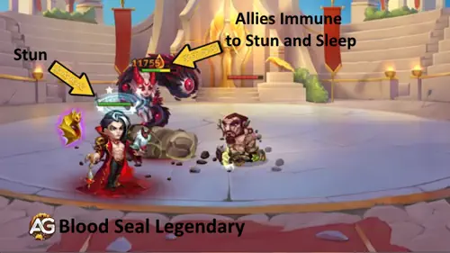
Prioridade de evolução: Muito Alta — Imunidade permanente a CC para todo o seu time é uma das mecânicas mais impactantes do PvP. Esta relíquia neutraliza completamente estratégias baseadas em atordoamento e força os oponentes a montar composições totalmente diferentes para counterar Dorian. Desbloqueie isto como prioridade máxima depois de Fonte de Sangue Lendária.
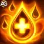
5ª — Pacto de Sangue (Nova Habilidade) Relíquia Lendária: Nível 1
Descrição no jogo: A cada 14 segundos, causa dano aos aliados com Vampirismo. Por 7,0 segundos, Vampirismo restaura mais Pontos de Vida. As habilidades de Dorian também curam mais os aliados durante esse período.
Explicação da habilidade: Pacto de Sangue é uma espada de dois gumes por design. A cada 14 segundos, Dorian causa (5% da Vida atual de cada aliado) como dano puro aos próprios aliados que têm Vampirismo — um sacrifício deliberado. Em troca, pelos próximos 7 segundos, o Vampirismo cura +100% mais HP e todas as habilidades de cura do Dorian passam a curar em dobro. Isso cria uma janela poderosa de 7 segundos em que sua equipe inteira fica virtualmente impossível de matar. Os 5% de dano nos aliados parecem assustadores, mas habilitam a janela de cura explosiva que compensa isso com sobra.
- Dano no aliado por ativação: Dano Puro: 5% da Vida atual do aliado
- Bônus de cura do Vampirismo: +100% por 7,0 segundos
- Tempo de recarga: 14 segundos
- Palavras-chave: Sacrifício
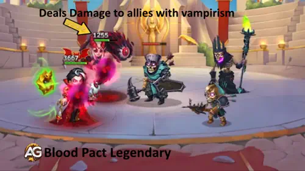
Prioridade de evolução: Alta — Desbloquear esta habilidade (Relíquia Nível 1) já concede imediatamente a janela de vampirismo dobrado. Evoluí-la ainda mais aumenta a porcentagem do bônus de cura. Depois de desbloqueada, esse burst de cura a cada 14 segundos muda o fluxo de qualquer luta longa — sendo crucial para Hydra e batalhas prolongadas de PvP.
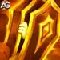
6ª — Chamado de Sangue (Nova Habilidade) Relíquia Lendária: Nível 30
Descrição no jogo: Quando um aliado morre, Dorian o ressuscita, sacrificando a si mesmo. Depois disso, Dorian entra no estado de Quase Morte por 5,0 segundos. Ele não pode se mover, usar habilidades ou ser atacado. Se os aliados restaurarem HP por Vampirismo 1 vez durante esse período, Dorian é ressuscitado. Esta habilidade afeta apenas os Heróis que iniciaram a batalha com Dorian.
Explicação da habilidade: Quando um dos seus aliados cai em batalha, Dorian imediatamente se sacrifica para trazê-lo de volta com 50% da Vida Máxima dele. Depois, ele entra em um estado congelado de Quase Morte por 5 segundos — não pode se mover, agir nem ser alvo. Se qualquer aliado se curar ao menos uma vez através de Vampirismo durante esses 5 segundos, Dorian também volta dos mortos. Em um time carregado de Vampirismo, esse ciclo pode acontecer várias vezes por batalha — tornando Dorian e sua equipe efetivamente imortais enquanto continuarem atacando.
- Vida ao ressuscitar: 50% da Vida Máxima do aliado
- Duração da Quase Morte: 5,0 segundos
- Curas de Vampirismo para se auto-ressuscitar: 1 ocorrência
- Restrições da Quase Morte: Não pode se mover / não pode usar habilidades / não pode ser atacado
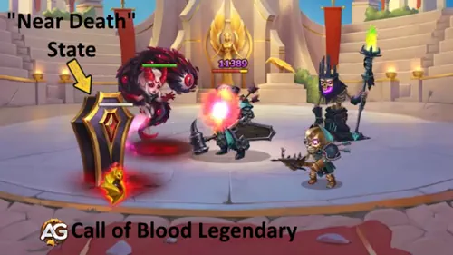
Prioridade de evolução: Média Alta — Esta habilidade muda completamente lutas longas e o PvP, mas exige Relíquia Nível 30 para ser desbloqueada — um investimento considerável. Em times montados ao redor de Vampirismo, o ciclo de ressurreição pode decidir partidas inteiras. Invista aqui depois que Selo de Sangue Lendário e Pacto de Sangue já estiverem ativos.
Melhor Skin para Dorian em Hero Wars Alliance
A prioridade de skins do Dorian gira em torno de Inteligência e Vida — status que escalam diretamente sua cura e o aumento de Vida Máxima que ele concede através do Amuleto dos Ancestrais.
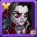
Skin Padrão
A Skin Padrão aumenta o atributo principal do Dorian: Inteligência +1.365. Como este é o atributo principal dele, cada ponto de Inteligência concede três pontos de Ataque Mágico, um ponto de Defesa Mágica e um ponto extra de Ataque Físico — escalando diretamente as fórmulas de cura de Fonte de Sangue e Asas da Noite.
- Inteligência: +1.365
- Ataque Mágico (da Int): +4.095
- Defesa Mágica (da Int): +1.365
- Ataque Físico (da Int): +1.365
Prioridade de evolução: Muito Alta – Inteligência multiplica em Ataque Mágico (×3), escalando todas as habilidades baseadas em fórmula do Dorian. Sempre priorize primeiro.
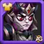
Skin Campeã
A Skin Campeã aumenta diretamente Ataque Mágico +10.687 — o status que escala Fonte de Sangue (30% de AM + 12.000 por acerto) e Asas da Noite (50% de AM + 9.000 por uso), aumentando a cura sempre que essas habilidades ativam.
- Ataque Mágico: +10.687
- Bônus da Fonte de Sangue por acerto: +3.206
- Bônus de cura de Asas da Noite por uso: +5.344
Prioridade de evolução: Alta – Ataque Mágico bruto é eficiente para escalar cura, especialmente no mid game, quando as fórmulas das habilidades são a principal fonte de cura. Priorize em terceiro, depois da Padrão e da Romântica.
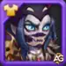
Skin Masquerade
A Skin Masquerade fornece Armadura +10.650, reduzindo o dano físico recebido. Para um mago-curandeiro da linha de trás, armadura é o menos impactante entre seus cinco status, já que a maioria das ameaças contra Dorian é mágica.
- Armadura: +10.650
Prioridade de evolução: Baixa – Armadura é em grande parte desperdiçada em um herói de Inteligência da linha de trás cujas ameaças de sobrevivência são predominantemente mágicas. Evolua por último, quando todas as outras skins estiverem maximizadas.
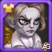
Skin Romântica
A Skin Romântica fornece Vida +106.645 — o melhor status secundário para Dorian. Vida escala diretamente o Amuleto dos Ancestrais (20% de Vida + 6.000 de Vida Máxima concedida ao aliado com menor Vida por uso), fazendo cada ponto de Vida aumentar diretamente quanto de Vida Máxima ele entrega.
- Vida: +106.645
- Bônus de Vida Máxima do Amuleto dos Ancestrais por uso: +21.329
Prioridade de evolução: Muito Alta – Cada ponto de Vida multiplica através do Amuleto dos Ancestrais (×20%), tornando esta skin tanto uma ferramenta ofensiva de suporte quanto um reforço de sobrevivência. Priorize logo depois da Skin Padrão.
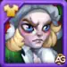
Skin de Inverno
A Skin de Inverno concede Defesa Mágica +10.687, melhorando a resistência do Dorian a dano mágico — o vetor de ameaça mais comum para um suporte de linha de trás frequentemente visado por magos inimigos e habilidades em área.
- Defesa Mágica: +10.687
Prioridade de evolução: Média Alta – Defesa Mágica aumenta de forma relevante o tempo de sobrevivência do Dorian contra composições carregadas de dano mágico, ajudando-o a continuar usando Selo de Sangue e Amuleto dos Ancestrais durante toda a luta. Priorize em quarto.
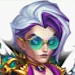
Blazing Skin+ – Penetração Mágica +21.300
Bônus: +21.300 Penetração Mágica → reduz a Defesa Mágica efetiva do inimigo quando as habilidades do Dorian acertam, permitindo que Asas da Noite cause mais dano — e como Asas da Noite cura os aliados por 100% do dano causado, mais dano significa diretamente mais cura. Essa é a conexão essencial: o objetivo do Dorian é sempre curar, e aqui o dano é simplesmente o veículo.
Fonte de Sangue também se beneficia: ela aplica uma marca que faz com que cada ataque aliado restaure Vida com base na fórmula do Dorian. Quanto mais dano cada ataque causar — incluindo o que vem da Penetração Mágica contornando a resistência —, maior a cura por ativação.
Resumindo, o Blazing Skin+ não muda o papel do Dorian — ele continua sendo um curandeiro. O que ele faz é remover o teto invisível que a Defesa Mágica inimiga coloca no seu output de cura, tornando-a mais confiável contra alvos resistentes em PvP e no conteúdo de fim de jogo.
- Penetração Mágica: +21.300
- Ganho indireto de cura de Asas da Noite: escala com o aumento de dano após a penetração
- Mais eficaz contra: inimigos com alta Defesa Mágica acumulada (tanks de PvP, chefes do final de jogo)
Prioridade de evolução: Média – Não adiciona um valor fixo direto de cura, mas remove um teto invisível no output de cura do Dorian causado pela Defesa Mágica inimiga. Priorize primeiro as skins Padrão, Romântica, Campeão e de Inverno — depois considere esta skin se você enfrenta frequentemente oponentes com alta resistência mágica.
Como Obter o Blazing Skin+
O novo Blazing Skin+ é obtido durante o Evento Skin+: primeiro adquira a skin Blazing padrão durante o evento, depois complete as missões do evento para desbloquear a melhoria Skin+. Fora do evento, o Skin+ pode ser obtido do Baú Heroico aproximadamente a cada 400 caixas abertas (até 2 baús gratuitos por dia, ou mais gastando esmeraldas). Novos eventos Skin+ rotacionam mensalmente — a melhor estratégia é obtê-lo durante o evento ou esperar seu retorno.
⚠️ No momento, o Blazing Skin+ só pode ser adquirido por meio de compras no jogo.
💡 Se você planeja aproveitar o evento pela loja oficial (Hero Wars Hub), lembre-se de usar o código ALEXANDREGAMES 🙌
💙 Isso não custa nada pra você e me ajuda a continuar trazendo conteúdo no blog e avaliações detalhadas de skins como as acima 🙏
Prioridade de Evolução dos Artefatos do Dorian em Hero Wars Alliance
Os artefatos do Dorian recompensam uma abordagem de escalonamento duplo: Livro e Anel amplificam sua cura por meio de Ataque Mágico e Inteligência, enquanto a Arma adiciona Tenacidade em toda a equipe para cobertura defensiva.
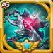
1º - Artefato de Arma: Aço Sangrento
Quando Dorian usa uma habilidade em combate, Aço Sangrento ativa um efeito que concede Tenacidade para toda a equipe por 9 segundos. Tenacidade reduz o dano crítico recebido pelo seu time. Com 100% de chance de ativação, isso dispara de forma confiável a cada uso de habilidade.
- Chance de ativação: 100%
- Tenacidade (time): +8,898
- Duração: 9 segundos
Prioridade de evolução: Média Alta – Tenacidade é um buff defensivo confiável para todo o time, mas não escala as fórmulas de cura do Dorian. Evolua depois do Livro e do Anel para completar o conjunto de artefatos.

2º - Artefato de Livro: Tomo do Conhecimento Arcano
O Tomo do Conhecimento Arcano entrega tanto Ataque Mágico +10.680 quanto Vida +53.394 — tornando-o o melhor artefato do Dorian. Ataque Mágico amplifica diretamente Fonte de Sangue e Asas da Noite, enquanto o bônus de Vida multiplica pela fórmula do Amuleto dos Ancestrais (20% de Vida + 6.000 de Vida Máxima por uso).
- Ataque Mágico: +10.680
- Vida: +53.394
- Bônus da Fonte de Sangue por acerto: +3.204
- Bônus de cura de Asas da Noite por uso: +5.340
- Bônus de Vida Máxima do Amuleto dos Ancestrais por uso: +10.679
Prioridade de evolução: Muito Alta (1º no geral) – Este artefato escala de forma única tanto as fórmulas de cura ativas do Dorian quanto o Amuleto dos Ancestrais ao mesmo tempo. Sempre evolua primeiro.

3º - Artefato de Anel: Anel de Inteligência
O Anel de Inteligência aumenta o atributo principal do Dorian. Cada ponto de Inteligência concede três pontos de Ataque Mágico, um de Defesa Mágica e um de Ataque Físico — o multiplicador mais eficiente do kit dele para escalar cura e resistência defensiva ao mesmo tempo.
- Inteligência: +3.990
- Ataque Mágico (da Int): +11.970
- Defesa Mágica (da Int): +3.990
- Ataque Físico (da Int): +3.990
Prioridade de evolução: Muito Alta (2º no geral) – O multiplicador de 3× em Ataque Mágico vindo da Inteligência faz deste o artefato ofensivo com melhor eficiência de status para o Dorian. Evolua imediatamente depois do Livro.
Prioridade de Evolução dos Glifos do Dorian em Hero Wars Alliance
As prioridades de glifos do Dorian seguem sua dupla escala: Ataque Mágico fortalece suas fórmulas de cura, e Vida multiplica através do Amuleto dos Ancestrais — ambos aumentam simultaneamente ofensiva e sobrevivência.
1º Glifo - Ataque Mágico
Ataque Mágico escala as duas habilidades ativas de cura do Dorian: Fonte de Sangue (30% de AM + 12.000 por acerto) e Asas da Noite (50% de AM + 9.000, curando 100% do dano causado). Também aumenta o limite de dano convertido em cura da passiva da classe Curandeiro (30% de AM + 89.100).
Status no nível 80: +12.850 de Ataque Mágico.
Prioridade de evolução: Muito Alta (1º no geral) – É o glifo de maior impacto para todas as fórmulas de cura do Dorian. Evolua primeiro.
2º Glifo - Vida
Vida escala diretamente o Amuleto dos Ancestrais: a fórmula é 20% de Vida + 6.000 de Vida Máxima concedida por uso. Com +122.800 de Vida vindos deste glifo, o Amuleto dos Ancestrais entrega +24.560 de Vida Máxima extras ao aliado-alvo toda vez que ativa. Também aumenta a sobrevivência do próprio Dorian e sinergiza com Pacto de Sangue (5% de dano na Vida atual do aliado).
Status no nível 80: +122.800 de Vida.
Prioridade de evolução: Muito Alta (2º no geral) – Serve de forma única tanto para ofensiva (escala do Amuleto dos Ancestrais) quanto para sobrevivência. Evolua logo depois de Ataque Mágico.
3º Glifo - Armadura
Armadura reduz o dano físico recebido por Dorian. Embora a maior parte das ameaças à linha de trás seja mágica, carries físicos como Keira, Jhu e Yasmine podem alcançar o fundo — especialmente no PvP. Um investimento básico em armadura mantém Dorian conjurando sob pressão física.
Status no nível 80: +12.850 de Armadura.
Prioridade de evolução: Média – O valor defensivo é real, mas situacional. Armadura contribui menos para o desempenho central do Dorian do que Ataque Mágico ou Vida. Evolua em terceiro.
4º Glifo - Defesa Mágica
Defesa Mágica reduz o dano vindo de magos inimigos. Como alvo prioritário de suporte, Dorian é frequentemente focado por heróis como Orion, Lars e Helios. Mais Defesa Mágica amplia sua janela de sobrevivência e garante que a aura de Vampirismo de Selo de Sangue e o Amuleto dos Ancestrais permaneçam ativos por mais tempo.
Status no nível 80: +12.850 de Defesa Mágica.
Prioridade de evolução: Média Alta – Contra times de PvP carregados de magia e certas configurações de Hydra, Defesa Mágica aumenta bastante a utilidade do Dorian. Evolua em quarto.
5º Glifo - Inteligência
Inteligência é o atributo principal do Dorian, fornecendo um multiplicador triplo: Ataque Mágico (×3), Defesa Mágica (×1) e Ataque Físico (×1). Ela escala todas as fórmulas de cura enquanto também melhora a sobrevivência por meio da Defesa Mágica adicional.
- Inteligência: +2.110
- Ataque Mágico (da Int): +6.330
- Defesa Mágica (da Int): +2.110
- Ataque Físico (da Int): +2.110
Prioridade de evolução: Alta – O multiplicador triplo é valioso, mas os glifos dedicados de Ataque Mágico e Vida oferecem retornos individuais maiores para a escala específica do Dorian. Evolua em quinto.
Como Counterar Dorian — Hero Wars Alliance
A força do Dorian vem da cura vampírica sustentada e da imunidade quase permanente a CC do time dele. Para vencê-lo, você precisa de heróis que ignorem cura, punam o autossacrifício ou atropelam a equipe antes que o ciclo de ressurreição consiga ativar.
Cornelius

Cornelius reduz defesa mágica e elimina magos com o monólito. Embora isso não countere a cura diretamente, pune fortemente os times do Dorian.
Celeste

Celeste bloqueia cura.
Sinergia do Dorian em Hero Wars Alliance
Dorian alcança seu potencial máximo quando é usado com heróis que têm Vampirismo natural ou que ampliam suas mecânicas de sacrifício. Quanto mais Vampirismo houver no time, mais fortes ficam o burst de cura de Pacto de Sangue e a corrente de ressurreição de Chamado de Sangue.

Kendle tem naturalmente alto dano crítico e se beneficia enormemente do aumento de Vampirismo vindo de Selo de Sangue. Cada ataque a cura novamente através da aura do Dorian, tornando-a quase impossível de matar em lutas longas de DPS.
Galahad

Galahad é um tanque de linha de frente que já possui Vampirismo embutido nas próprias habilidades. O Selo de Sangue do Dorian amplifica a autossustentação do Galahad, tornando-o quase impossível de matar como tanque — a linha de frente se mantém enquanto a cura do Dorian trabalha ao fundo.
Dorian vs Hydra: Uma Visão Estratégica
Dorian se mostra um herói excepcional ao enfrentar as formidáveis Hydras, oferecendo um suporte de cura inestimável com sua habilidade de Vampirismo. É muito comum ver Dorian em times de Hydra, já que sua cura em aura com Vampirismo continua funcionando mesmo após sua morte.
Sugestões de Times do Dorian para as Hydras
| Tipo de Hydra | Composição do Time | Dano Médio (em Milhões) |
|---|---|---|
| Hydra da Água | Fafnir, Dorian, Artemis, Tristan, Galahad | 40M |
| Hydra das Trevas | Fafnir, Dorian, Artemis, Tristan, Galahad | 64M |
| Hydra do Fogo | Fafnir, Dorian, Artemis, Tristan, Galahad | 100M |
| Hydra da Luz | Martha, Lilith, Dorian, Faceless, Xe'sha, | 100M |
| Hydra do Vento | Dorian, Fox, Dark Star, Daredevil, Andvari | 34M |
| Hydra da Terra | Dorian, Fox, Daredevil, Elmir, K'arkh | 27M |
Melhores Times do Dorian
| # | Heróis |
|---|---|
| 1 | Kendle, Dorian, Folio, Byrna, Electra |
| 2 | Kendle, Dorian, Guus, Yasmine, Julius |
| 3 | Kendle, Dorian, Byrna, Yasmine, Electra |
| 4 | Lilith, Kendle, Dorian, Xe'Sha, Cleaver |
| 5 | Kendle, Dorian, Lars, Krista, Cleaver |
Conclusão — Guia do Dorian Hero Wars Alliance
O rework do Dorian fez algo raro em Hero Wars Alliance: pegou um bom herói e o tornou extraordinário. Ele não é mais apenas um curandeiro parado na retaguarda — ele é um motor estratégico de sacrifício, ressurreição e sustentação vampírica que remodela completamente a forma como cada luta se desenrola.
Para tirar o melhor do Dorian, sempre priorize o Talismã de Sangue por sua sinergia de Penetração Mágica com Asas da Noite. Evolua a Skin Romântica e o Glifo de Vida cedo para maximizar a Vida Máxima concedida pelo Amuleto dos Ancestrais. Para as relíquias, desbloqueie primeiro Fonte de Sangue Lendária, depois Selo de Sangue Lendário pela imunidade a CC do time inteiro, e avance até Chamado de Sangue para a corrente de ressurreição que pode virar completamente lutas equilibradas.
Em times de Hydra, Dorian é tier S para Hydra do Fogo e da Luz, e uma escolha confiável de tier A na maioria dos outros tipos. No PvP, sua imunidade lendária a CC torna o time inteiro resistente a estratégias baseadas em atordoamento — forçando os adversários a repensarem toda a abordagem.
Invista em Dorian. Ele vai devolver isso em sangue — e em vitórias.
Sugestão de vídeo
Explore novas habilidades com nossos guias em destaque!


Deixe a sua opinião!
Você gostou do nosso Guia da Relíquia Lendária de Dorian para Hero Wars Alliance? Há algo que você não entendeu ou gostaria de sugerir mudanças? Convidamos você a participar da nossa seção de comentários na página do Blog Alexandre Games. Fique à vontade para expressar sua opinião, esclarecer suas dúvidas e compartilhar suas sugestões.
Clique no botão abaixo para começar: